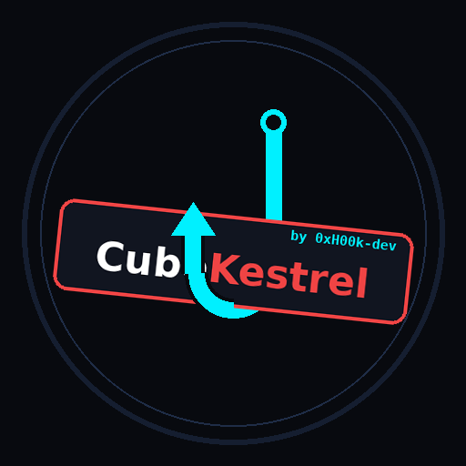

Убедитесь, что у вас установлен Fabric Loader для нужной версии Minecraft, а также загружен соответствующий мод Fabric API.
Перекиньте скачанные cubekestrel-1.0.0.jar и fabric-api.jar в папку .minecraft/mods.
Запустите игру и зайдите в Настройки → Управление → Назначение клавиш. Вкладка с настройками чита CubeKestrel находится в самом верху списка.
Перед использованием модулей движения (Speed и HighJump) на сервере рекомендуется нажать кнопку «Калибровка АЧ» в шапке меню. Персонаж сам пробежит и подпрыгнет 5 секунд, чтобы определить лимиты сервера и сделать безопасные значения(иногда работает не корректно).
Включайте нужные модули по горячим клавишам (по умолчанию G — FullBright, H — PlayerESP, N — AutoWaterDrop, R — BowAimbot, можно настроить свои). В настройках X-Ray можно открыть список блоков с поиском и выбрать нужные руды.
Если вас вызвали на проверку читов с демонстацией экрана, нажмите клавишу P (можно изменить в настройках). Чит мгновенно выключит все функции, уберёт интерфейс с экрана, скроет свою вкладку из настроек управления и исчезнет из списка модов. Повторное нажатие P вернёт всё обратно.
В отличие от обычных чит-клиентов с громоздкими окнами поверх экрана, CubeKestrel нативно вшит прямо в стандартное меню «Назначение клавиш» Minecraft. Все вкладки, ползунки, фильтр блоков и кнопки калибровки выглядят как родной интерфейс игры.
При нажатии клавиши P мод мгновенно заметает все следы в самой игре: выключает визуалы, очищает привязки клавиш, вырезает свой раздел из настроек управления и скрывает себя из списка модов Fabric. При поверхностной проверке экрана обнаружить его невозможно — единственный способ найти чит, это вручную открыть папку mods.
Внутри собраны 11 продуманных функций на все случаи: автоматической калибровки под античит любого сервера и AutoWaterDrop с поиском ведра в инвентаре до X-Ray, 3D-траекторий снарядов и плавного BowAimbot.
Copyright (c) 2026 0xH00k-dev. Все права защищены. Чит CubeKestrel и его исходный код являются интеллектуальной собственностью автора. Просмотр кода на GitHub, а также скачивание и использование мода для личной некоммерческой игры разрешены; любое копирование, создание форков, изменение, распространение или перезалив на сторонние ресурсы без предварительного письменного разрешения автора (0xH00k-dev) строго запрещены.
CubeKestrel является независимой авторской разработкой и никак не связан с Mojang Studios, Microsoft или разработчиками Fabric. Мод предоставляется «как есть» (AS IS) исключительно в ознакомительных и образовательных целях.
Я занимаюсь исключительно разработкой читов и клиентских утилит для видеоигр.
Если у вас есть вопросы по какому-либо из моих проектов, пишите их на почту